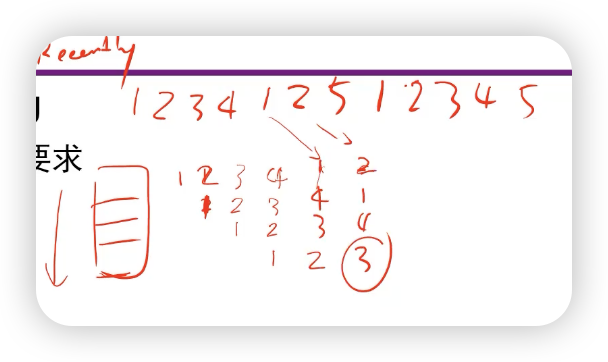

CACHE
程序的运行局部性原理¶
- 在一小段时间内，最近被访问过的程序和数据很可能被再次访问
- 在空间上，这些被访问的程序和数据往往集中在一小片存储区
- 在访问顺序上，指令顺序执行比转移执行的可能性大（5:1）
- 一个例题：
- 答案：空间，时间，空间，时间
我们考虑以下这一段代码：
int sum_array_3d(int a[M][N][N]) {
int i, j, k, sum = 0;
for (i = 0; i < M; i++)
for (j = 0; j < N; j++)
for (k = 0; k < N; k++)
sum += a[k][i][j];
return sum;
}
这段代码的局部性很差。因为看最内层循环，k每次+1，内存都跳了很远。
可以把循环的层数调换一下，比如让j放在最内层循环。

层次存储器系统¶
- 使用高速缓冲存储器Cache来提高CPU对存储器的平均访问速度。
- 将最近被访问的信息项装入到Cache中（时间局部）。
- 将最近被访问的信息项临近的信息一起装入到Cache中（空间局部）。
高度缓冲存储器Cache¶
- 定义
- 设置于主存和CPU之间的存储器，用高速的静态存储器实现，缓存了CPU频繁访问的信息。
- 特点
- 高速：与CPU的运行速度基本匹配
- 透明：完全硬件管理，对程序员透明（你能知道cache有多大，存了什么数吗？）
Cache的基本运行原理¶
- 读：
- Cache中还需要存地址（假如Cache有64Byte，每条数据4Byte，那实际上存不下16条数据）。
要解决的问题¶
-
地址和Cache行之间的映射关系：
如何根据主存地址得到Cache中的数据？
-
数据之间一致性：
Cache中的内容是否已经是主存对应地址的内容？
-
数据交换的粒度：
Cache中的内容与主存内容以多大的粒度交换？
4Bytes，8Bytes，64Bytes？
越大越好吗？不是，缓存大小是有限的。
-
Cache内容装入和替换策略
如何提高Cache的命中率？
Cache参数¶
- 块/行（Line）：数据交换的最小单位
- 命中（Hit）：在较高层次中要访问的内容
- 命中率（Hit Rate）：命中次数/访问次数
- 命中时间：访问在较高层次中数据的时间
- 缺失（Miss）：需要在较低层次中访问块
- 缺失率（Miss Rate）：1-命中率
- 缺失损失（Miss Penalty）：替换较高层次数据块的时间+将该块交付给处理器的时间（Dram+Sram）
- 命中时间\ll缺失损失
- 平均访问时间=HR*命中时间+（1-HR）*缺失损失
参数典型数值¶
全相联方式¶
- 没有限制，任何数据可以出现在cache的任何地方
- 块号：就是Tag
- 块内地址：按照字节来访问一行中的哪一位
- 这时，块号：30位，块内地址：2位（4个Byte）
- （好好想想块号到底是什么，是主存地址中的前面一部分）
- 特点：
直接映射方式¶
使用Hash的方式：
例如，主存里是4的部分只能放在0（mod 4）的地方。
tag的位数逐渐降低（和全相连相比）
查询过程：拿index去查，然后拿Tag去比（一样or不一样），如果一样，再看Valid与否。
- 注意：直接映射的tag比全相连的tag短，所以相同大小能放的块更多！
Cache举例（Direct Mapping）¶
- 解答：miss（存入0-15），miss（存入16-31），miss（存入32-47），hit，hit，hit，hit，miss（把0-15给替换），miss（把16-31给替换）
- 失效原因：启动失效/冲突失效
两路组相联方式¶
- 原来一个2MB的Sram，分成两个1MB的直接映射
- 特点
- 前两种方式的折衷方案。
- 集中了两个方式的优点。成本也不太高。
- 实际上，全相连是n-way组相联，n是cache的行数，直接映射是1-way组相联。
- 全相连和直接映射是它的特例
组相联Cache访问举例¶
四路组相联¶
- 块大小：4Bytes（2位offset）
- 每一组有2^8=256个块，每个块大小为4Bytes+22位Tag+1位Valid
- 上图的一横行叫做一个set，一个set中有4个way
三种映射方式比较¶
- 直接映射
- 主存中的一块只能映射到Cache中的唯一一个位置
- 定位时，不需要判断，只需替换
- 全相连映射
- 主存中的一块可以映射到Cache中的任何一个位置
- N路组相联映射
- 主存中的一块可以选择映射到Cache中N个位置
- 全相联映射和N路组相联映射的失效处理
- 从主存中取出新块
- 为了腾出Cache空间，需要替换出一个Cache块
- 替换出哪个块（替换策略）？
一致性保证¶
- 写直达（Write through）
- 强一致性保证，效率低
- 在Cache中命中
- 同时修改Cache和对应的主存内容
- 没有在Cache中命中
- 写分配（Write allocate）
- 非写分配（not Write allocate）
- 拖后写（Write back）（写回）
- 弱一致性保证（SRAM和DRAM中的数据很长时间内是不一样的），替换时再写主存
- 主动替换
- 被动替换
- 通过监听总线上的访问操作来实现
- 实现复杂，效率比较高
- 弱一致性保证（SRAM和DRAM中的数据很长时间内是不一样的），替换时再写主存
- 不命中：
LYY：No write allocate下的write invalidate这一列是在cache中找到了，且valid为1，那么写以后需要把valid置为0（因为cache没有更新）
提高存储访问的性能¶
- 平均访问时间=命中时间\times命中率+缺失损失\times缺失率
- 提高命中率
- 缩短缺失损失
- 提高Cache本身的速度
Cache缺失的四类原因¶
- 必然缺失（Compulsory Miss）
- 开机或是进程切换
- 首次访问数据块
- 容量缺失（Capacity Miss）
- 活动数据集超出了Cache的大小
- 冲突缺失（Conflict Miss）
- 多个内存块映射到同一个Cache块
- 某一Cache组块（Set）已满，但空闲的Cache块在其他组
- 无效缺失
- 其他进程修改了内容
- 增加Cache容量有助于缓解冲突（Hash冲突的概率更小了？）
影响Cache命中率的因素¶
- Cache容量
- 大容量可以提高命中率，但是增加了价格
- Cache块大小
- 地址映射方式
- 几路组相联？
- 替换算法
- 替换哪一行出去？
- 多级Cache
块大小的权衡¶
- 一般来说，数据块较大可以更好地利用空间局部性，但是：
- 数据块大意味着缺失损失的增大：
- 需要花费更长的时间来装入数据块
- 若块大小相对于Cache总容量来说太大的话，命中率将降低
- Cache块数太少
- 数据块大意味着缺失损失的增大：
块替换策略¶
- 直接映射：不需要选择（有唯一的位置）
- 全相联映射，N路组相联映射？
-
最近最少使用LRU
- 满足程序局部性要求
- 有较高命中率
- 硬件实现复杂

- 用一个链表想这件事，命中的块要放到链表头
-
先进先出FIFO
- 满足时间局部性
- 实现比较简单
-
随机替换RAND
- 实现简单
- 命中率也不太低
多级Cache¶
- 采用两级或更多级cache来提高命中率
- 增加了用户的选择（？）
- 将Cache分解为指令Cache和数据Cache
Cache接入系统的体系结构¶
多核一致性保证策略（MESI）¶

作者: